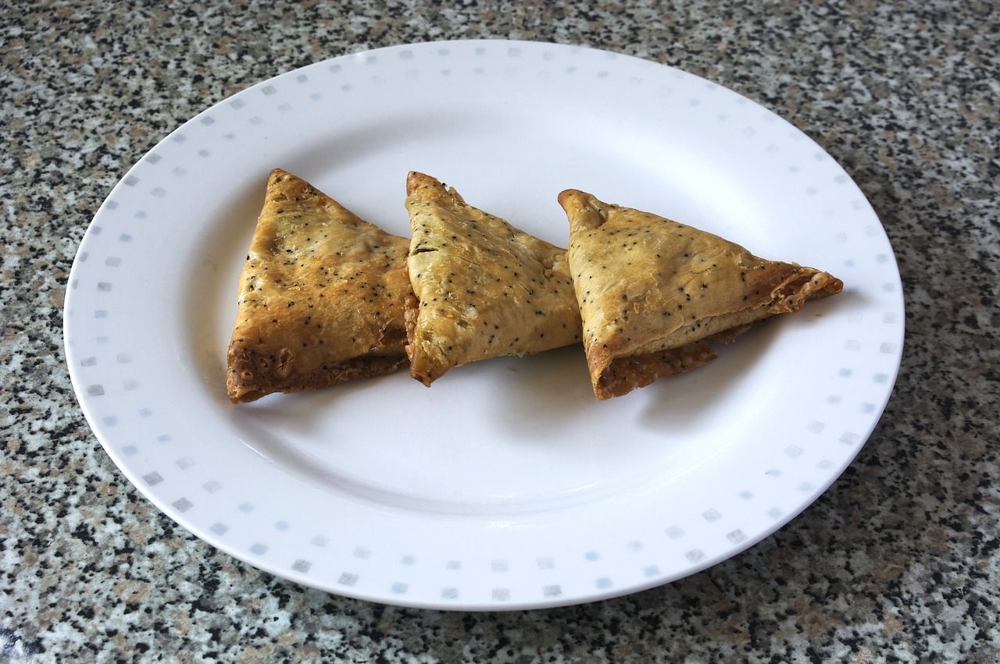

/home
Samosa

Description:
A samosa is a crispy triangle-shaped snack filled with a tasty mix of potatoes, peas, onions, or sometimes meat. It is deep fried until golden and crunchy, making it a popular snack in many countries.
Samosas are often served with chutneys like sweet tamarind or fresh mint. They are easy to carry, affordable, and delicious, which makes them perfect for tea time or as a quick street food treat.
Key ingredients:
- Potatoes
- Onions
- Cooking oil
- Spices
Steps to make a Samosa:
- Make Dough - Mix flour, salt, oil, and water to form a smooth dough; let it rest.
- Prepare Filling - Cook potatoes, peas, onions, and spices until well mixed.
- Shape Samosas - Roll dough, cut into halves, and form cone shapes.
- Fill & Seal - Add filling into cones and seal edges with water.
- Fry Samosas - Deep fry until golden and crispy.